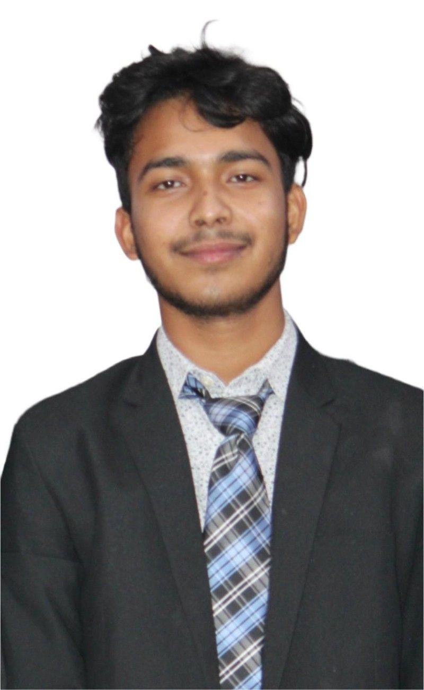

2020
Class 10 · UP Board
Adarsh Navodaya Inter College
Completed in 2020.
I'm a first-year Bachelor of Technology student in Computer Science and Engineering at Maulana Abul Kalam Azad University of Technology, West Bengal. I'm building my foundation in C and Python, and Maths is my favourite subject.

A first-year engineering student focused on learning computer science and developing practical programming skills.
Building a strong foundation in computer science and engineering.
I'm Sayan Biswas, from Hooghly, West Bengal. I completed Class 10 under the UP Board at Adarsh Navodaya Inter College in 2020, Class 12 in the Science stream under the UP Board at Saraswati Vidya Mandir in 2022, and a B.Sc. in 2025. In 2026, I began a B.Tech in Computer Science and Engineering at Maulana Abul Kalam Azad University of Technology, where I'm now a first-year student.
Studying Computer Science and Engineering has been a childhood dream of mine. I'm currently learning C and Python, with Maths as my favourite subject. Outside my studies, I enjoy listening to Arijit Singh and Anuv Jain, and following cricket—especially Team India.
Each step has brought me closer to the computer science dream I've had since childhood.
Completed in 2020.
Completed in 2022.
Amar Shaheed Kanchan Singh Autonomous PG College
Studying at Maulana Abul Kalam Azad University of Technology. Learning C and Python, with a growing interest in frontend development.
My current course, programming languages, favourite subject, and progress through first year.
First-year Computer Science and Engineering student at Maulana Abul Kalam Azad University of Technology, West Bengal.
Class 12 · Science · Saraswati Vidya Mandir · 2022I'm currently learning C and Python; frontend development is an area I'm interested in exploring.
Current languages: C · PythonI'm getting started with C and Python. This space will grow as I learn and take on new projects.
First year · learning in progressA few things I enjoy when I'm away from my studies.
I enjoy listening to Arijit Singh and Anuv Jain.
I support Team India, and Virat Kohli is my favourite cricketer.
I'm especially interested in building the parts of websites people see and interact with.
Building my computer science skills today, and using them to create useful things tomorrow.
Build a strong understanding of computer science, develop my programming skills in C and Python, and learn through practical work.
Studying Computer Science and Engineering has been a childhood dream. Now I'm working toward it through my B.Tech journey, step by step.
I'm interested in computer science, frontend development, and connecting with people who enjoy learning and building.